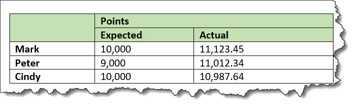

Example: Complex table with manual accessibility markup
In extremely complex tables, such as those with a single header cell in the middle of the table, fine-grained accessibility controls are available to explicitly associate any content cell with any header cell. This might also be useful for cases where processors do not support the implied accessibility relationships described above.
In the following sample, header cells are identified using the
@id attribute, which is referenced using the
@headers attribute on appropriate content
cells. This makes all header relationships in the table explicit. Note that this sample
ignores the @scope attribute, which could be
used to exercise manual control without setting as many attribute values; it also ignores
the fact that <thead> creates a
header relationship even when the @id and
@headers attributes are not used.
<table frame="all">
<title>Sample with fully manual accessibility control</title>
<desc>Names are listed in the column c1. Points are listed in both data columns, with
expected points in column c2 and actual points in column c3.</desc>
<tgroup cols="3">
<colspec colname="c1"/>
<colspec colname="c2"/>
<colspec colname="c3"/>
<thead>
<row>
<entry morerows="1"> </entry>
<entry namest="c2" nameend="c3" id="pts">Points</entry>
</row>
<row>
<entry id="exp" headers="pts">Expected</entry>
<entry id="act" headers="pts">Actual</entry>
</row>
</thead>
<tbody>
<row>
<entry id="name1">Mark</entry>
<entry headers="name1 exp pts">10,000</entry>
<entry headers="name1 act pts">11,123.45</entry>
</row>
<row>
<entry id="name2">Peter</entry>
<entry headers="name2 exp pts">9,000</entry>
<entry headers="name2 act pts">11,012.34</entry>
</row>
<row>
<entry id="name3">Cindy</entry>
<entry headers="name3 exp pts">10,000</entry>
<entry headers="name3 act pts">10,987.64</entry>
</row>
</tbody>
</tgroup>
</table>The output might be rendered in the following way:
